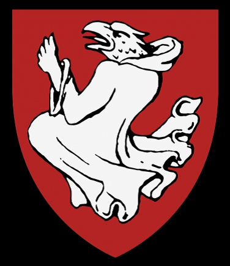

Antavla
923487 Katarina Klasdotter Djäkn
Blev minst 46 år.

Far:
Klaus Lydekesson Djäkn (1379? - 1437)
Mor:
Kristina Jönsdotter Garp (1380? - >1434)
Född:
1407 Kaskö, Finland.
[1]
Död:
efter 1453 Nyynäinen, Finland.
[1]
Barn med
923486 Jacob (Jeppe) Kurki (1400? - 1456)
Barn:
Anna Jacobsdotter Kurki (1425? - 1489)
Birgitta Jacobsdotter Kurki (1440? - 1490?)
Personhistoria
Årtal
Ålder
Händelse
1407
Födelse 1407 Kaskö, Finland
[1]
1425?
Dottern
461743 Anna Jacobsdotter Kurki
föds omkring 1425
>1434
Modern
1846975 Kristina Jönsdotter Garp
dör efter 1434 Nousiainen, Finland
[1]
1437
Fadern
1846974 Klaus Lydekesson Djäkn
dör 1437 Åbo, Finland
[1]
1440?
Dottern
230879 Birgitta Jacobsdotter Kurki
föds omkring 1440 Näs (F)
[1]
>1453
Död efter 1453 Nyynäinen, Finland
[1]
Källor
[1]
Reijo Mitro Savola